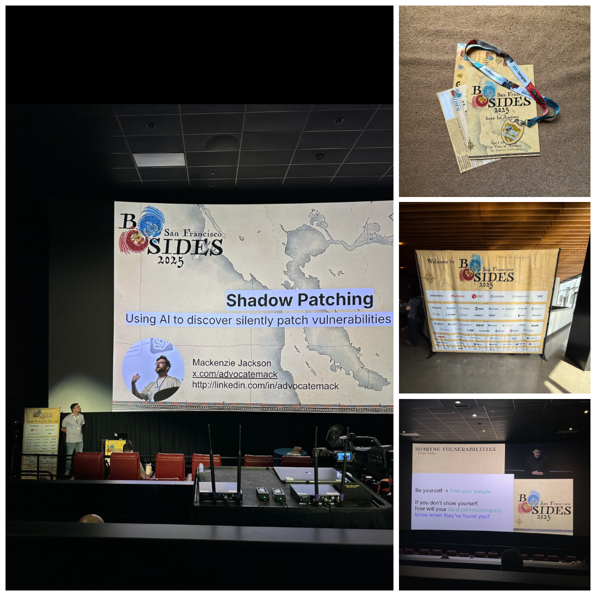

BSidesSF 2025 marked my third time attending the conference, and once again, it was an immersive dive into the ever-evolving world of Information Security. From the outset, it was evident that artificial intelligence (AI) was at the forefront of discussions, reflecting its growing significance in the cybersecurity landscape.
Throughout the sessions and workshops, there was a palpable focus on how AI is reshaping threat detection and response mechanisms. The conversations extended beyond technical implementations, delving into the ethical considerations of deploying AI in security operations. Topics such as algorithmic bias and the importance of maintaining privacy while leveraging AI tools were thoughtfully explored.
The human element in cybersecurity was also a recurring theme. Discussions emphasized the need for empathy and emotional intelligence within security teams, highlighting that trust and collaboration are as crucial as technical prowess in defending against cyber threats.
Attending the various presentations was both a privilege and an enlightening experience. The insights shared by the speakers were not only informative but also inspiring, reinforcing the importance of continuous learning in this field. A heartfelt thank you to the BSidesSF staff, volunteers, presenters, and everyone involved in orchestrating such a remarkable event.
Overall, BSidesSF 2025 served as a compelling reminder that AI is not a distant concept—it’s an integral part of our current cybersecurity practices, influencing how we approach and mitigate threats. Thank you, BSidesSF, for another outstanding conference. I’m already looking forward to next year!
